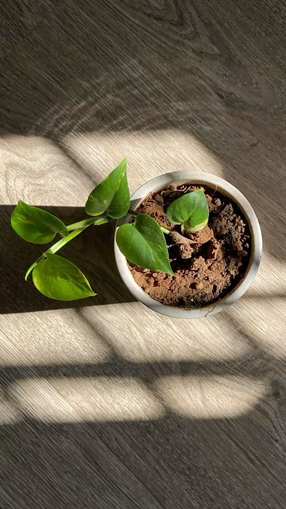

.png)
üåø‚ö° POL√çTICAS PUBLICAS | Eco Cidades

Governo ressalta import√¢ncia da
participação dos municípios nas
políticas públicas ambientais
Fonte: Agência Câmara de
Notícias
Em um esforço para fortalecer a gestão ambiental no país, o governo federal destacou o papel fundamental dos municípios na implementação de políticas públicas voltadas à sustentabilidade. A declaração foi feita durante audiência pública na Câmara dos Deputados, que debateu a necessidade de maior integração entre as esferas federal, estadual e municipal para enfrentar desafios como desmatamento, mudanças climáticas e conservação da biodiversidade.
Municípios como Agentes Chave na Preservação
Representantes do Ministério do Meio Ambiente e da Climate destacaram que as prefeituras são peças essenciais para a efetividade das ações ambientais, uma vez que estão mais próximas da realidade local e podem adaptar políticas às necessidades específicas de cada região. Entre as prioridades discutidas estão:Fortalecimento dos órgãos ambientais municipais, com capacitação técnica e repasse de recursos.
Inclusão de municípios no planejamento nacional de combate ao desmatamento e queimadas.
Incentivos fiscais para cidades que adotarem práticas sustentáveis, como reciclagem e energias renováveis.
Desafios e Soluções Durante o debate, gestores municipais relataram dificuldades como falta de estrutura e recursos humanos qualificados. Em resposta, o governo anunciou que estuda:
Editais específicos para financiar projetos ambientais locais.
Parcerias com universidades para capacitar técnicos das prefeituras.
Sistema unificado de licenciamento ambiental, que agilize processos sem abrir mão do rigor técnico.
Próximos Passos
O Ministério do Meio Ambiente se comprometeu a apresentar, até o final deste semestre, um plano de ação com metas claras para os municípios. Enquanto isso, a Frente Parlamentar Ambientalista deve propor projetos de lei que facilitem o acesso a recursos federais.
"Não há como proteger o meio ambiente sem envolver os gestores locais. Eles conhecem o território e são os primeiros a responder a crises ambientais", afirmou o deputado Rodrigo Agostinho (PSB-SP), coordenador da frente.
Acompanhe as discussões sobre políticas ambientais no Portal da Câmara.
Municípios como Agentes Chave na Preservação
Representantes do Ministério do Meio Ambiente e da Climate destacaram que as prefeituras são peças essenciais para a efetividade das ações ambientais, uma vez que estão mais próximas da realidade local e podem adaptar políticas às necessidades específicas de cada região. Entre as prioridades discutidas estão:
Desafios e Soluções Durante o debate, gestores municipais relataram dificuldades como falta de estrutura e recursos humanos qualificados. Em resposta, o governo anunciou que estuda:
Próximos Passos
O Ministério do Meio Ambiente se comprometeu a apresentar, até o final deste semestre, um plano de ação com metas claras para os municípios. Enquanto isso, a Frente Parlamentar Ambientalista deve propor projetos de lei que facilitem o acesso a recursos federais.
"Não há como proteger o meio ambiente sem envolver os gestores locais. Eles conhecem o território e são os primeiros a responder a crises ambientais", afirmou o deputado Rodrigo Agostinho (PSB-SP), coordenador da frente.
Acompanhe as discussões sobre políticas ambientais no Portal da Câmara.